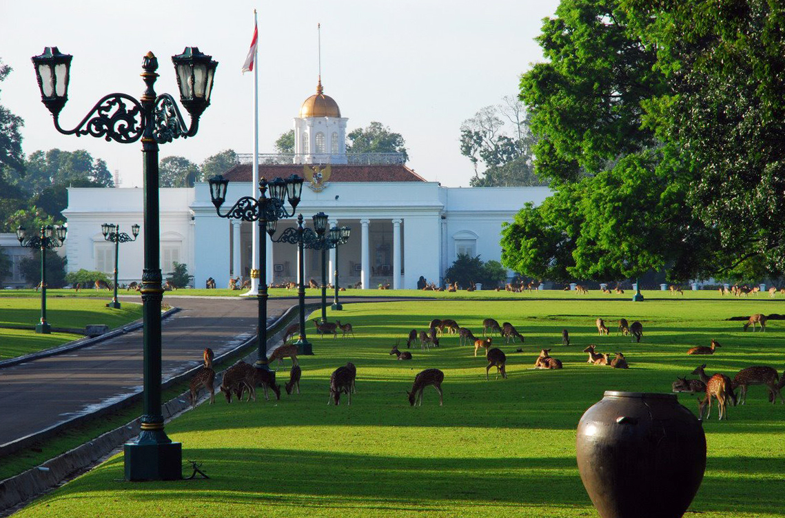
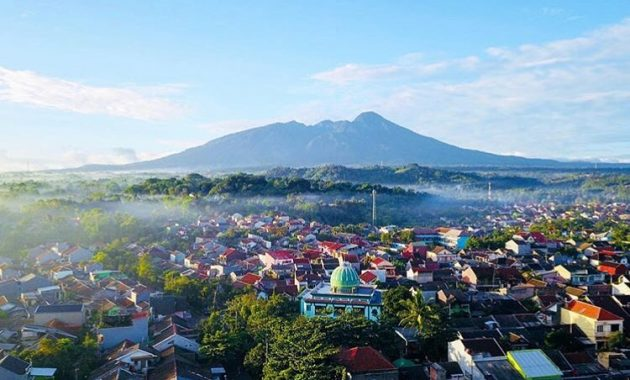
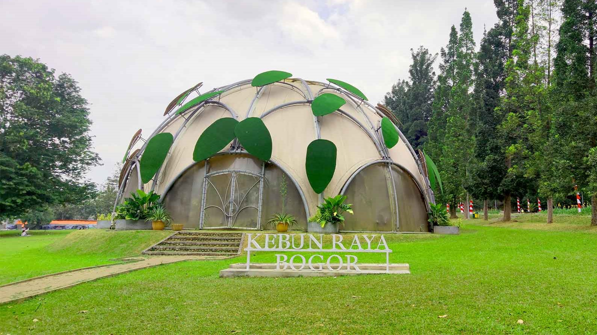
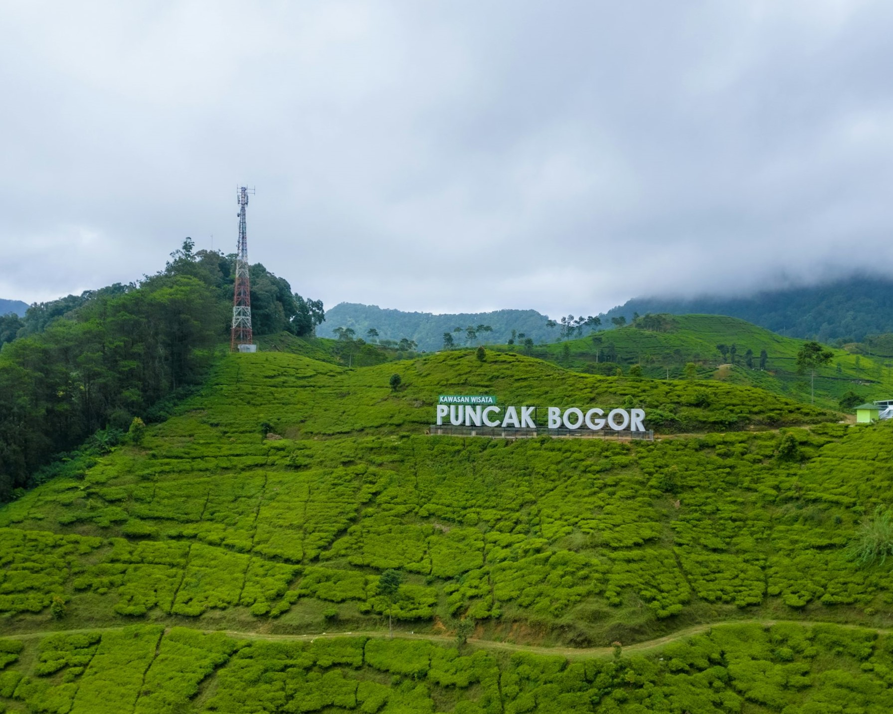

Sejarah

Sejarah Bogor mencakup berbagai penguasa yang memimpin perkembangan kota Bogor yang padat
penduduk di Indonesia . Kota Bogor pernah menjadi ibu kota Kerajaan Sunda dan dikenal
sebagai Pakuan Pajajaran. Ketika Belanda mengambil alih, kota itu dimasukkan dalam divisi
administratif yang dikenal sebagai Buitenzorg selama era Hindia Belanda . Setelah kemerdekaan,
kota itu menjadi bagian dari Kabupaten Bogor . Sejarahnya tercermin dalam arsitekturnya yang
mencakup bangunan dari periode kolonial, modern, pasca-modern, dan kontemporer. Bogor terletak
di selatan Jakarta di pulau Jawa , Indonesia . Kota ini terkenal dengan Istana Bogor dan
Kebun Raya Bogor .
Geografis

Kota Bogor terletak di Provinsi Jawa Barat, Indonesia. Kota ini berada pada ketinggian
190–330 meter di atas permukaan laut dan dikelilingi oleh pegunungan seperti Gunung
Salak dan Gunung Gede Pangrango, sehingga memiliki udara yang sejuk. Kota Bogor
berbatasan langsung dengan Kabupaten Bogor di utara, timur, selatan, dan barat.
Letaknya yang strategis menjadikan Bogor sebagai penghubung wilayah Jabodetabek
(Jakarta, Bogor, Depok, Tangerang, Bekasi).
Kota Bogor dialiri oleh dua sungai besar, yaitu Sungai Ciliwung dan Sungai Cisadane,
yang berperan penting bagi kehidupan masyarakat. Dengan curah hujan tinggi sepanjang
tahun, Bogor dijuluki sebagai "Kota Hujan". Kondisi geografisnya yang subur mendukung
vegetasi dan pertanian, serta menjadikan kota ini sebagai destinasi wisata alam yang populer.
Wisata
Kota Bogor memiliki beragam destinasi wisata, mulai dari wisata alam hingga sejarah.
Berikut adalah beberapa tempat wisata favorit di Bogor:
Kebun Raya Bogor

Kebun Raya Bogor adalah salah satu ikon utama Kota Bogor dan kebun botani tertua di
Asia Tenggara. Didirikan pada tahun 1817 oleh Gubernur Jenderal Thomas Stamford Raffles,
kebun ini memiliki koleksi lebih dari 15.000 jenis tumbuhan, termasuk bunga bangkai
(Amorphophallus titanum) yang terkenal. Kebun Raya Bogor juga menjadi rumah bagi Istana
Bogor, yang merupakan tempat bersejarah dan kediaman resmi Presiden Indonesia. Dengan
area seluas sekitar 87 hektare, kebun ini menjadi tempat favorit untuk penelitian,
edukasi, dan rekreasi bagi wisatawan.
Puncak Bogor

Puncak Bogor, yang terletak di daerah perbukitan antara Bogor dan Cianjur, adalah
destinasi wisata alam yang populer. Kawasan ini dikenal dengan panorama pegunungan
yang indah, udara sejuk, dan kebun teh yang membentang luas. Puncak menjadi tempat
favorit untuk bersantai, trekking, dan menikmati berbagai villa serta resor. Selain
itu, terdapat objek wisata seperti Taman Safari Indonesia, Gunung Mas Tea Estate,
dan beragam kafe dengan pemandangan memukau yang cocok untuk menikmati suasana santai
bersama keluarga atau teman.